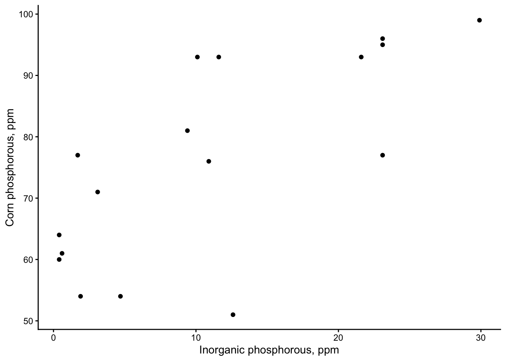
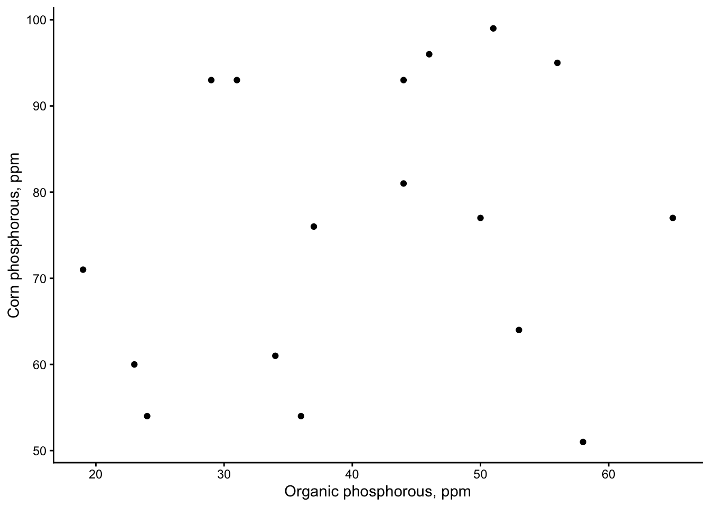
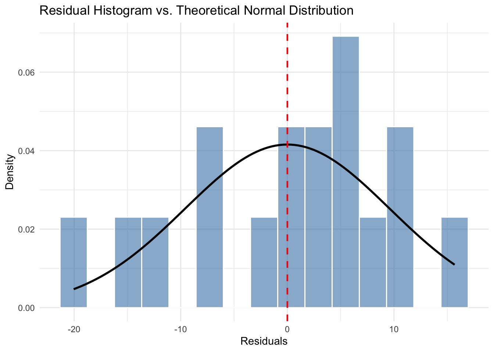
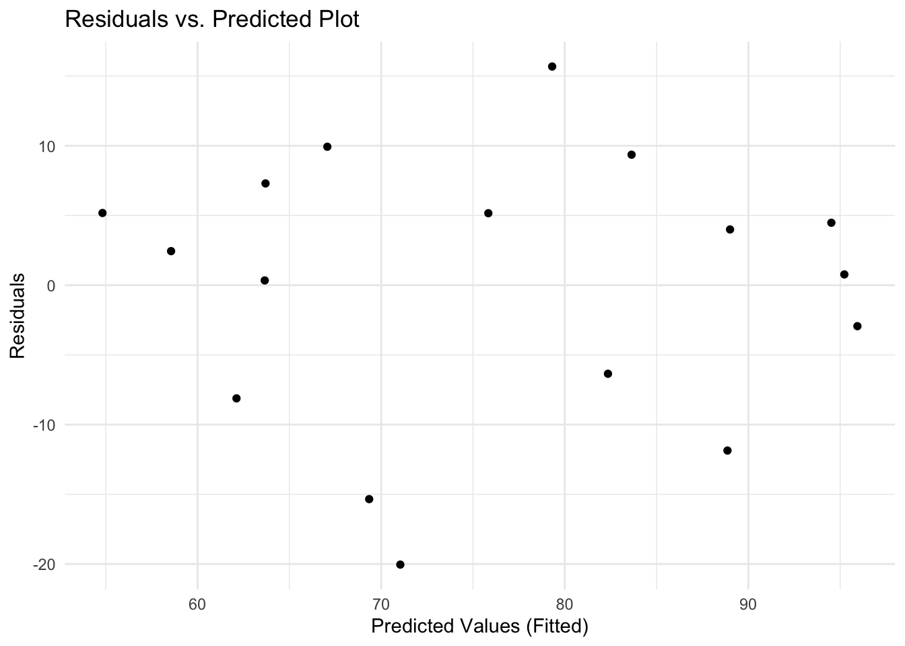
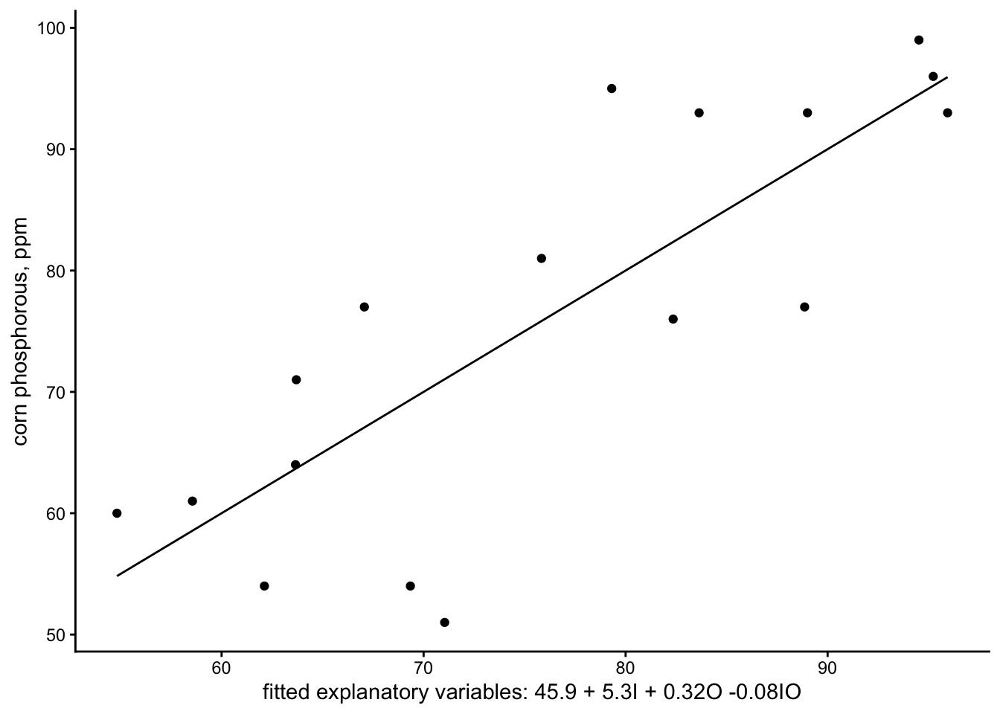
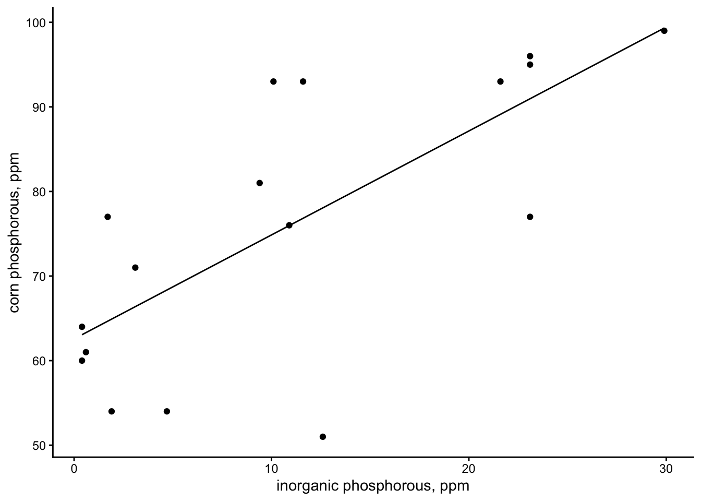

22 Fri Oct 30 - Multiple regression (two explanatory varibles)
Analysis of data from Snedecor and Cochrane 1980 Table 17.2.1 Do corn plants use organic or inorganic phosphorus in soil? Phosphorus in corn (ppm) was measured in 17 Iowa soils at 20 deg C in relation to inorganic and organic phosphorus in the soil.
require(dplyr)
corn.data = read.csv("https://raw.githubusercontent.com/ahurford/biol-4605-data/refs/heads/main/data/corn2.csv")%>%rename(Pcorn=PaP,inorganic.P = ioP, organic.P = oP)
corn.data## plot inorganic.P organic.P Pcorn
## 1 1 0.4 53 64
## 2 2 0.4 23 60
## 3 3 3.1 19 71
## 4 4 0.6 34 61
## 5 5 4.7 24 54
## 6 6 1.7 65 77
## 7 7 9.4 44 81
## 8 8 10.1 31 93
## 9 9 11.6 29 93
## 10 10 12.6 58 51
## 11 11 10.9 37 76
## 12 12 23.1 46 96
## 13 13 23.1 50 77
## 14 14 21.6 44 93
## 15 15 23.1 56 95
## 16 16 1.9 36 54
## 17 17 29.9 51 99require(ggplot2)
g1=ggplot(corn.data,aes(x=inorganic.P, y=Pcorn))+geom_point()+xlab("Inorganic phosphorous, ppm")+ylab("Corn phosphorous, ppm")+theme_classic()
g2=ggplot(corn.data,aes(x=organic.P, y=Pcorn))+xlab("Organic phosphorous, ppm")+geom_point()+ylab("Corn phosphorous, ppm")+theme_classic()
g1

## Construct the model\[ P_{corn} = \alpha + \beta_1 I + \beta_2 O + \beta_{12} I O + \epsilon. \]
The parameter \(\beta_{12}\) stands for rate of change in phosphorus content of corn relative to rate of change of inorganic phosphorus, adjusted for effects of organic phosphorus. It is read as ‘the rate of change in available phosphorus with change in inorganic phosphorus, controlled for organic phosphorus.’ The variable \(I O\) is the product of the inorganic phosphorous, \(I\), and the organic phosphorous, \(O\) (units: ppm\(^2\)). This term, \(\beta_{12} I O\) is called the interaction term. The other parameters are as have been defined in previous lectures. The parameter \(\alpha\) is the intercept, and the value of \(P_{corn}\) when \(O = I = 0\).
22.1 Execute the model
corn.model = lm(Pcorn~inorganic.P + organic.P + inorganic.P*organic.P, data = corn.data)
summary(corn.model)##
## Call:
## lm(formula = Pcorn ~ inorganic.P + organic.P + inorganic.P *
## organic.P, data = corn.data)
##
## Residuals:
## Min 1Q Median 3Q Max
## -20.042 -6.353 2.443 5.180 15.687
##
## Coefficients:
## Estimate Std. Error t value Pr(>|t|)
## (Intercept) 45.92323 12.23633 3.753 0.00241 **
## inorganic.P 5.30367 1.73357 3.059 0.00913 **
## organic.P 0.32783 0.28562 1.148 0.27174
## inorganic.P:organic.P -0.08309 0.03536 -2.350 0.03522 *
## ---
## Signif. codes: 0 '***' 0.001 '**' 0.01 '*' 0.05 '.' 0.1 ' ' 1
##
## Residual standard error: 10.65 on 13 degrees of freedom
## Multiple R-squared: 0.6668, Adjusted R-squared: 0.59
## F-statistic: 8.673 on 3 and 13 DF, p-value: 0.002022Based on our output are parameter estimates are:
\[\alpha = 45.9 \mbox{ppm} \qquad \beta_1 = 5.30 \qquad \beta_2 = 0.33 \qquad \beta_{12} = -0.08 \mbox{ppm} \]
We should also note that the effect of inorganic phosphorous is significant and the interaction term is significant.
Let’s also calculate our SS table and partition our degrees of freedom.
## Analysis of Variance Table
##
## Response: Pcorn
## Df Sum Sq Mean Sq F value Pr(>F)
## inorganic.P 1 2295.23 2295.23 20.2328 0.0005994 ***
## organic.P 1 29.95 29.95 0.2640 0.6160271
## inorganic.P:organic.P 1 626.55 626.55 5.5231 0.0352174 *
## Residuals 13 1474.74 113.44
## ---
## Signif. codes: 0 '***' 0.001 '**' 0.01 '*' 0.05 '.' 0.1 ' ' 1Note that the F value is calculated by dividing the mean squares (Mean Sq) for the model terms by the mean squares for the residuals.
The degrees of freedom calculation is:
\[ \begin{array}{lllll} \mbox{GLM} & P_{corn}-\alpha & = & \beta_{1}I + \beta_2O + \beta_{12}IO & + \ \ \epsilon \\ \mbox{df} & 17-1 & = & 1 + 1 +1 & + 13 \ \ \\ \mbox{SS} & 4426.47 & = & 2295.23+29.95+626.55 & + \ \ 1474.74 \\ \end{array} \]
22.2 Check assumptions
corn.data$residuals <- residuals(corn.model)
# Plot using density instead of count
ggplot(corn.data, aes(x = residuals)) +
# after_stat(density) normalizes the bars so the curve fits the y-axis scale
geom_histogram(aes(y = after_stat(density)), bins = 15,
fill = "steelblue", color = "white", alpha = 0.6) +
# Layer a theoretical normal curve over the overall residuals data
stat_function(
fun = dnorm,
args = list(mean = 0, sd = sd(corn.data$residuals)),
color = "black",
linewidth = 1
) +
geom_vline(xintercept = 0, linetype = "dashed", color = "red", linewidth = 0.8) +
labs(
title = "Residual Histogram vs. Theoretical Normal Distribution",
x = "Residuals",
y = "Density"
) +
theme_minimal()
#Create data frame holding just the predicted and residual values
plot_data <- data.frame(
predicted = fitted(corn.model),
residuals = residuals(corn.model)
)
# 3. Build the ggplot
ggplot(plot_data, aes(x = predicted, y = residuals)) +
geom_point(color = "black") +
labs(
title = "Residuals vs. Predicted Plot",
x = "Predicted Values (Fitted)",
y = "Residuals"
) +
theme_minimal()
22.3 Calculate the likelihood ratio
SSinorganic = anova(corn.model)$`Sum Sq`[1]
SSorganic = anova(corn.model)$`Sum Sq`[2]
SSinteraction = anova(corn.model)$`Sum Sq`[3]
SSmodel = SSinorganic+SSorganic+SSinteraction
SSTotal = sum(anova(corn.model)$`Sum Sq`)
R2 = SSmodel/SSTotal
R2## [1] 0.6668361## [1] 11413.22Dr. Schneider’s notes also involve some likelihood ratio calculations to calculate the evidence for model terms.
22.4 Plot the results
alpha = unname(coef(corn.model)[1])
beta1 = unname(coef(corn.model)[2])
beta2 = unname(coef(corn.model)[3])
beta12 = unname(coef(corn.model)[4])
xvalues = alpha + beta1*corn.data$inorganic.P + beta2*corn.data$organic.P + beta12*corn.data$organic.P*corn.data$inorganic.P
corn.data = data.frame(corn.data, fitted = corn.model$fitted.values, xvalues = xvalues)
corn.data## plot inorganic.P organic.P Pcorn residuals fitted xvalues
## 1 1 0.4 53 64 0.3417789 63.65822 63.65822
## 2 2 0.4 23 60 5.1796238 54.82038 54.82038
## 3 3 3.1 19 71 7.3005504 63.69945 63.69945
## 4 4 0.6 34 61 2.4433513 58.55665 58.55665
## 5 5 4.7 24 54 -15.3459817 69.34598 69.34598
## 6 6 1.7 65 77 9.9328873 67.06711 67.06711
## 7 7 9.4 44 81 5.1633203 75.83668 75.83668
## 8 8 10.1 31 93 9.3620974 83.63790 83.63790
## 9 9 11.6 29 93 3.9982216 89.00178 89.00178
## 10 10 12.6 58 51 -20.0422242 71.04222 71.04222
## 11 11 10.9 37 76 -6.3531945 82.35319 82.35319
## 12 12 23.1 46 96 0.7721028 95.22790 95.22790
## 13 13 23.1 50 77 -11.8617932 88.86179 88.86179
## 14 14 21.6 44 93 -2.9393139 95.93931 95.93931
## 15 15 23.1 56 95 15.6873628 79.31264 79.31264
## 16 16 1.9 36 54 -8.1188126 62.11881 62.11881
## 17 17 29.9 51 99 4.4800234 94.51998 94.51998g1.fitted = ggplot(corn.data, aes(x=xvalues))+
geom_point(aes(y=Pcorn))+
geom_line(aes(y=fitted))+theme_classic()+ylab("corn phosphorous, ppm")+xlab("fitted explanatory variables: 45.9 + 5.3I + 0.32O -0.08IO")
g1.fitted
# inorganic phosphorous only model:
inorganic = data.frame(Pcorn = corn.data$Pcorn, inorganic.P = corn.data$inorganic.P)
inorganic.model = lm(Pcorn~inorganic.P, data=inorganic)
inorganic$fitted = inorganic.model$fitted.values
inorganic.fitted = ggplot(inorganic, aes(x=inorganic.P))+
geom_point(aes(y=Pcorn))+
geom_line(aes(y=fitted))+theme_classic()+ylab("corn phosphorous, ppm")+xlab("inorganic phosphorous, ppm")
inorganic.fitted
22.5 Report the science conclusion
We have support for inclusion of organic phosphorous in the model because the interaction term is significant. We find that inorganic phosphorous affects corn phosphorous and organic phosphorous also has an effect in combination with inorganic phosphorous. The model that best describes our data has all three explanatory variables.